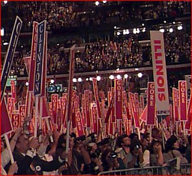

 On the Horizon
As we head into the final days
of the campaign, we need your help
energizing your community to
GET OUT THE VOTE!Call the Clinton/Gore office number
below to volunteer.Illinois Highlights
October 28 - The President's Remarks in Chicago
Chicago volunteer Molly Houlihan
is profiled as a Volunteer of the WeekClinton-Gore '96 Headquarters
500 North Dearborn
Suite 522
Chicago, IL 60610Phone: 312-329-9696
Fax: 312-329-1008
State Director: Ertharin Cousin
United Democrats of Illinois
500 North Dearborn
Chicago, IL 60610Phone: 312-329-1996
Fax: 312-329-9440
The Coordinated Campaign is a distinct entity, directed by the Democratic National Party and the State Democratic Parties, and designed to elect Democrats to all levels of office.
Paid for by Clinton/Gore ’96 General Election Committee, Inc.